전자계산기제어산업기사 (2012-03-04 기출문제)
1과목: 전자회로
1. 다음 중 발진기에서 발진주파수가 변동되는 것을 방지하기 위한 대책으로 적합하지 않은 것은?
- 온도를 일정하게 유지한다.
- 부하의 변동을 크게 한다.
- 정전압 회로를 넣는다.
- 습기가 차지 않게 한다.
(정답률: 알수없음)

2. 전력증폭기에 대한 설명으로 옳은 것은?
- A급의 경우가 전력효율이 가장 좋다.
- C급의 효율은 50% 이하로 AB급보다 낮다.
- B급은 동작점이 포화영역 부근에 존재한다.
- C급은 반송파 증폭용이나 주파수 체배용으로 사용된다.
(정답률: 알수없음)
3. 전류증폭을 α가 0.98인 트랜지스터의 α차단 주파수가 100[MHz]일 때 이 트랜지스터의 β차단 주파수는?
- 2[MHz]
- 20[MHz]
- 98[MHz]
- 100[MHz]
(정답률: 알수없음)
4. 다음 같은 증폭기에 관한 설명으로 옳지 않은 것은?
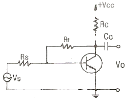
- 부궤환을 걸어줌으로써 출력 임피던스는 감소한다.
- 부궤환을 걸어줌으로써 입력 임피던스는 증가한다.
- 무궤환 때에 비해 안정도가 좋아진다.
- 부궤환을 걸어줌으로써 일그러짐은 감소한다.
(정답률: 알수없음)
5. 이상적인 차동증폭기의 공통성분제거비(CMRR)는?
- 0
- 1
- -1
- 무한대
(정답률: 알수없음)
6. 다음 설명 중 옳지 않은 것은?
- 전력 효율은 전원 전력 소비량을 적게 하면서 신호 출력을 크게 할 수 있느냐 하는 지수를 말한다.
- A급 전력 증폭기의 컬렉터 손실은 무신호 시에 가장 작다.
- B급 전력 증폭기는 출력이 최대 가능 출력의 약 40%일 때 컬렉터 손실이 가장 크다.
- C급 전력 증폭기는 신호 출력의 첨두치에서 가장 큰 손실이 발생한다.
(정답률: 알수없음)
7. 그림에서 A는 연산증폭기이다. Vi-Vo 관계로 가장 적합한 것은?
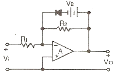
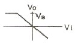
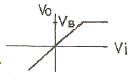
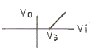
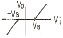
(정답률: 알수없음)
8. 다음 연산증폭기 회로에서 출력 Vo를 나타내는 식으로 가장 적합한 것은?
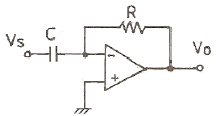
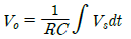
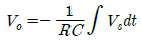
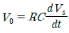
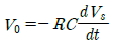
(정답률: 알수없음)
9. 다음 연산증폭기 회로에서 Vi-Vo 의 관계 특성으로 가장 적합한 것은?(단, 연산증폭기 및 다이오드는 이상적이다.)
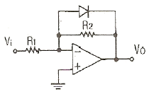
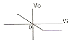
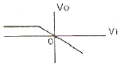
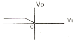
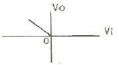
(정답률: 알수없음)
10. 다음 중 정궤환을 하는 회로로 묶인 것은?
- 시미트 트리거회로, 발진회로
- 미분회로, 적분회로
- 시미트 트리거회로, 미분회로
- 발진회로, 적분회로
(정답률: 알수없음)
11. 다음 회로에서 LED의 순방향 전압이 2.4[V]일 때 전류 IF는 몇 [mA] 인가?
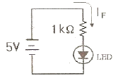
- 1.2[mA]
- 1.8[mA]
- 2.6[mA]
- 3.2[mA]
(정답률: 알수없음)
12. 다음은 연산증폭기를 사용한 회로이다. 전압이득 (Vo/Vs)은 얼마인가?
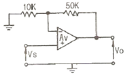
- -5
- 1/5
- 6
- -1/6
(정답률: 알수없음)
13. 표본화된 정보 하나하나를 부호화하여 1, 0으로 나타내는 펄스 신호의 계열로 치환시키는 펄스변조 방식을 무엇 이라 하는가?
- PCM
- PAM
- PWM
- PNM
(정답률: 알수없음)
14. 공통 이미터접지 증폭회로에서 트랜지스터의 h-정 수 중 전류증폭률을 나타낸 것은?
- hie
- hfe
- hre
- hce
(정답률: 알수없음)
15. 다음 회로에서 Barkhausen 의 발진 조건 βA=1 이 되는 조건은?
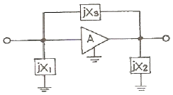
- X1 ＜ 0, X2 ＞ 0, X3 ＞ 0
- X1 ＞ 0, X2 ＜ 0, X3 ＜ 0
- X1 ＞ 0, X2 ＜ 0, X3 ＞ 0
- X1 ＜ 0, X2 ＜ 0, X3 ＞ 0
(정답률: 알수없음)
16. 궤환이 없을 때 증폭기의 전압이득이 40[dB]이고, 왜율이 5[%] 이다. 이 증폭기에 궤환율 β = 0.09의 부궤환을 걸었을 때 왜율은?
- 0.1[%]
- 0.5[%]
- 1[%]
- 5[%]
(정답률: 알수없음)
17. 다음 회로에서 입력 단자와 출력 단자가 도통 되는 상태는?
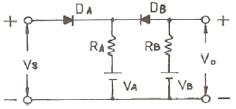
- VS ＞ VB, VA ＜ VB
- VS ＜ VA, VA ＜ VB
- VS ＜ VA, VS ＞ VB
- VS ＞ VA, VS ＜ VB
(정답률: 알수없음)
18. FET의 3 정수에 대한 사항들 중 옳지 않은 것은?(단, Source 접지이다.)
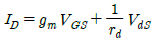
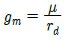
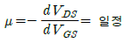
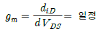
(정답률: 알수없음)
19. 펄스파를 얻는 목적에 쓸 만한 것이 아닌 것은?
- 쌍안정 멀티바이브레이터
- 블로킹 발진기
- 플립플롭
- 단접합 트랜지스터(UJT)
(정답률: 알수없음)
20. 다음 설명 중 옳은 것은?
- FET는 대칭형 쌍방향 스위치로 사용이 가능하다.
- FET는 게이트의 전류에 의해 제어되는 전류 제어 용소자이다.
- FET는 BJT에 비해서 동작 속도가 빠르기 때문에 집적회로(IC)에서 주로 사용한다.
- FET는 입력 임피던스가 매우 작기 때문에 초퍼 회로로 사용한다.
(정답률: 알수없음)
2과목: 디지털공학
21. n개의 입력 변수에 대해 2n개의 출력을 가지며, 각 입력 조합에 대응하는 상호 배타적인 출력을 갖는 회로는?
- 인코더
- 멀티플렉서
- 디멀티플렉서
- 디코더
(정답률: 알수없음)
22. 5개의 플립플롭을 사용하여 최대 10진수를 얼마까지 계수할 수 있는가?
- 31
- 32
- 49
- 50
(정답률: 알수없음)
23. 다음 Diode 논리회로의 출력은?
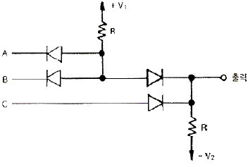
- (A + B)C
- AB + C
- A + B + C
- ABC
(정답률: 알수없음)
24. 다음과 같은 회로는?
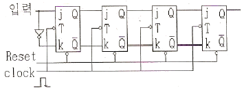
- 4bit ring counter
- 4bit 비동기 2진 counter
- 4bit shift register
- 4bit 직렬 가산기
(정답률: 알수없음)
25. 다음과 같은 논리 회로의 출력 Y는?
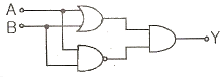
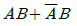
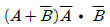
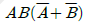
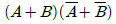
(정답률: 알수없음)
26. 다음 코드 중 비수치적인 자료를 표현할 수 없는 것은?
- ASCII 코드
- EBCDIC 코드
- BCDIC 코드
- 8421 BCD 코드
(정답률: 알수없음)
27. 판독/기록 메모리에 데이터를 넣는 것은?
- 읽기(read)
- 제어(control)
- 기록(write)
- 인출(fetch)
(정답률: 알수없음)
28. JK 플립플롭에서 발생할 수 있는 레이스(race) 현상의 원인이 되는 것은?
- J입력과 K입력으로 들어가는 신호의 전파시간이 서로 다르기 때문이다.
- 클록펄스의 폭이 주입력에서 주출력까지의 전파지연 시간보다 클 경우에 발생한다.
- 회로의 출력 Q와
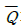
가 동일한 값을 가질 경우에 발생한다. - NAND 게이트와 NOR 게이트를 혼용할 경우 발생한다.
(정답률: 알수없음)
29. X=AB+CD를 논리회로로 표현하면?
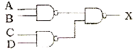
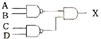
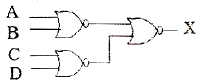
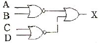
(정답률: 알수없음)
30. 불 대수의 정리 중에서 옳지 않은 것은?
- A+AB=A
- A(A+B)=A
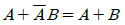
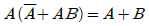
(정답률: 알수없음)
31. 자리값(가중치)이 없는 코드는?
- 3-초과 코드
- 8421 코드
- 5421 코드
- 4221 코드
(정답률: 알수없음)
32. Exclusive OR 논리회로가 응용되지 않는 것은?
- 가산기
- 감산기
- 비교기
- 기억장치
(정답률: 알수없음)
33. 10진수를 표현하는 2진 코드(binary code) 중 자기보수화(self-complementary)가 불가능한 코드는?
- 2421 코드
- 51111 코드
- 3-초과 코드
- BCD(8421) 코드
(정답률: 알수없음)
34. 반감산기(A-B)에서 자리 내림수(Brrow)를 얻기 위한 기능은?
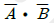
- AB
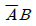
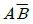
(정답률: 알수없음)
35. RS 플립플롭에 대한 설명 중 옳지 않은 것은?
- S(set), R(reset), C(clock)의 입력과 Q,
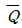
의 출력을 가진다. - 클록 C에 신호가 들어오지 않으면 S나 R입력값에 관계없이 출력은 변화가 없다.
- S와 R이 모두 0일 때 클록 입력이 변하면 출력은 변화가 없다.
- S와 R이 모두 1일 때 클록 입력이 변하면 회로 내부의 지연시간에 따라 출력값을 예상할 수 있다.
(정답률: 알수없음)
36. 입력 펄스에 따라 미리 정해진 순서대로 상태가 변화하는 레지스터로서 발생 횟수를 세거나 동작 순서를 제어하기 위한 타이밍(timing) 신호를 만드는데 가장 적합한 회로는?
- 범용 레지스터
- 멀티플렉서
- 카운터
- 스택
(정답률: 알수없음)
37. D 플립플롭 회로의 특성 방정식은?
- Q(t+1) = D'Q(t)
- Q(t+1) = D
- Q(t+1) = DQ(t)'
- Q(t+1) = Q(t)
(정답률: 알수없음)
38. 2개의 입력 bit와 앞자리에서 발생한 올림수를 더 하는 논리 회로는?
- 반가산기
- 병렬가산기
- 전가산기
- 직렬가산기
(정답률: 알수없음)
39. 0100 0110과 같이 두 자리로 표시된 3-초과 코드를 10진수로 나타내면?
- 13
- 46
- 64
- 134
(정답률: 46%)
40. BCD계수의 modules는?
- 4
- 6
- 8
- 10
(정답률: 알수없음)
3과목: 마이크로프로세서
41. 다음 중 시스템을 보호하기 위한 타이머는?
- Watch dog timer
- 보레이트 생성 타이머
- 정주기 A/D 타이머
- 정주기 D/A 타이머
(정답률: 알수없음)
42. ROM의 종류 중에 사용자가 프로그램하며, 자외선으로 지울 수 있는 것은?
- PROM
- EPROM
- EEPROM
- Mask ROM
(정답률: 알수없음)
43. CPU의 8개 스테이트 시간마다 증가하는 16비트 타이머에서 20[MHz] 발진기를 사용한 경우 타이머의 발생주기는? (단, 1 스테이트는 2 클록이다)
- 0.01[μs]
- 0.⑤[μs]
- 0.8[μs]
- 1.6[μs]
(정답률: 알수없음)
44. 모듈 단위의 오브젝트 파일을 하나로 합쳐서 그것에 인덱스를 붙인 것은?
- 실행 파일
- 라이브러리
- 소스 파일
- 프로시저
(정답률: 알수없음)
45. 다음 [보기]에 나열된 내용과 관계있는 장치는?
- 기억장치
- 연산장치
- 제어장치
- 출력장치
(정답률: 알수없음)
46. 마이크로프로세서에서 제어장치가 시간을 계수할 수 있는 기준이 되는 것은?
- 플래그
- 클록(clock)
- 제어버스
- 포트출력
(정답률: 알수없음)
47. XON/XOFF 프로토콜과 거리가 먼 것은?
- 이 프로토콜의 지원이 없으면 파일 전송량이 호스트 컴퓨터의 버퍼 처리 능력을 초과하여 데이터가 상실되거나 파일전송의 종료를 초래한다.
- 데이터의 흐름을 on/off시켜 버퍼가 오버플로우를 방지한다.
- 수신 버퍼에 저장되는 데이터의 양이 버퍼의 용량에 도달하면 소프트웨어는 호스트에 XOFF를 보낸다.
- 버퍼가 지정된 로우레벨(보통50%이하)까지 비워지면 통신소프트웨어는 호스트 컴퓨터에 XOFF를 보낸다.
(정답률: 알수없음)
48. LED 구동에 대한 설명 중 옳지 않은 것은?
- 스태틱 구동은 직류 구동이다
- 다이나믹 구동은 펄스 구동이다.
- 다이나믹 구동은 눈의 잔상을 이용한다.
- 많은 수의 포트로 많은 양의 LED를 구동한다.
(정답률: 알수없음)
49. 여러 개의 명령문을 하나로 간단히 줄일 수 있게 하는 기능은?
- 마이크로오퍼레이션
- 프로시저
- 매크로
- 분기명령
(정답률: 알수없음)
50. RS-232C통신을 4800bps로 한다. 이 때 데이터 포맷을 1개의 스타트 비트, 8개의 데이터 비트, 1개의 스톱비트로 구성한다면 1초에 전송할 수 있는 바이트(Byte)의 수는?
- 240
- 300
- 480
- 600
(정답률: 알수없음)
51. 스택 메모리(Stack Memory)가 사용되지 않는 경우는?
- 함수 내의 자동변수 선언
- 사칙연산 수식을 행할 때
- 함수를 Call 할 때
- 분기 명령이 실행될 때
(정답률: 알수없음)
52. 5비트 저항분할기의 디지털 입력이 10101 일 때 출력전압은? (단, 0 = 0[V]. 1 = 10[V] 이다.)
- 약 2.21[V]
- 약 4.14[V]
- 약 6.36[V]
- 약 6.77[V]
(정답률: 알수없음)
53. 인터럽트 발생 요인이 아닌 것은?
- 입출력장치가 데이터의 전송을 요구하거나 끝났음을 알리는 경우
- 컴퓨터 시스템 조작자의 의도적인 조작에 의해서 중단되는 경우
- 중앙처리장치 내에서 데이터를 전달하기 위하여 서브루틴을 호출하는 경우
- 산술연산 중 오버플로우가 발생한 경우
(정답률: 알수없음)
54. 다음 중 양방향인 것은?
- 주소 버스(Address Bus)
- 데이터 버스(Data Bus)
- 제어 버스(Control Bus)
- 리셋(Reset) 신호
(정답률: 알수없음)
55. 번지 지정방식으로 옳지 않은 것은?
- 직접 번지 지정방식
- 간접 번지 지정방식
- 직 · 간접 번지 지정방식
- 인덱스 번지 지정방식
(정답률: 알수없음)
56. 보[baud]에 관한 설명 중 옳지 않은 것은?
- 데이터 신호의 발생 속도를 표시
- 단위 시간에 정보 전달을 위해 얻을 수 있는 펄스의 수
- 정보 또는 정보 흐름 속도를 표시
- 신호 전송속도
(정답률: 알수없음)
57. 주기억장치에서 명령을 IR(Instruction register)로 가져오기 위해 필요한 시간은?
- Seek time
- Run time
- Instruction time
- Cycle time
(정답률: 알수없음)
58. 인터럽트의 개념 설명으로 옳은 것은?
- 프로그램을 실행할 때, 외부로 의문이 생기거나 무엇인가 급한 일이 있는지 묻는 것을 설렉팅(selecting)이 라고 한다.
- 일정한 시간 간격으로 CPU로 인터럽트를 걸어 서비스를 요구하는 것을 타이머 인터럽트(timerinterrupt)라고 한다.
- 외부로부터 필요에 따라 인터럽트 요구를 내어 CPU에 인터럽트 프로그램을 실행시키는 방법은 인터럽트 요구가 접수될 경우, 인터럽트 프로그램의 어드레스를 CPU로 알리는 하드웨어가 필요 없다.
- I/O 포트에서 인터럽트 프로그램의 어드레스를 만드는 회로를 타이머 회로라고 한다.
(정답률: 알수없음)
59. 명령어 인출, 해석과 연산, 저장 등의 명령을 발생시키는 장치는?
- 제어장치
- 기억장치
- 연산장치
- 입출력장치
(정답률: 알수없음)
60. 멀티미디어 응용프로그램들의 실행을 좀 더 빠르게 할 수 있도록 설계된 인텔 펜티엄 프로세서는?
- 센트리노
- 펜티엄II
- MMX
- x86
(정답률: 알수없음)
4과목: 프로그래밍언어
61. BNF 표기법에서 정의를 의미하는 것은?
- ::=
- |
- = =
- ＜＞
(정답률: 알수없음)
62. 시스템 프로그래밍 언어로 가장 적합한 것은?
- COBOL
- FORTRAN
- BASIC
- C
(정답률: 알수없음)
63. C 언어에서 사용되는 이스케이프 시퀀스(Escape-Sequence)에 대한 설명으로 틀린 것은?
- ＼r : carriage return
- ＼t : tab
- ＼b : backspace
- ＼n : null character
(정답률: 알수없음)
64. 어셈블리어에서 어떤 기호적 이름에 상수 값을 할당하는 명령은?
- ASSUME
- ORG
- EQU
- EVEN
(정답률: 알수없음)
65. 어셈블러가 두 개의 패스(PASS)로 구성되는 주된이유는?
- 패스 1, 2의 어셈블러 프로그램이 작아서 경제적이기 때문에
- 한 개의 패스로는 처리 속도는 빠르나 메모리가 많이 소요되기 때문에
- 기호를 정의하기 전에 사용할 수 있어 프로그램 작성이 용이하기 때문에
- 한 개의 패스로는 프로그램이 너무 커서 유지보수가 어렵기 때문에
(정답률: 알수없음)
66. C 언어에서 사용되는 문자열 출력 함수는?
- scanf( )
- puts( )
- putchar( )
- gets( )
(정답률: 알수없음)
67. 목적 프로그램을 생성하지 않고 필요할 때마다 기계어로 번역하는 것은?
- 컴파일러
- 어셈블러
- 링커
- 인터프리터
(정답률: 알수없음)
68. 어셈블리어에 대한 설명으로 틀린 것은?
- 기계어를 심볼로 대치한 언어이다.
- 기호를 정하여 명령어와 데이터를 기술한다.
- 전문 지식이 필요하며 호환성이 떨어진다.
- 고급 언어에 해당한다.
(정답률: 알수없음)
69. 어셈블리어 명령 "NOP"에 대한 설명으로 틀린 것은?
- 특정 위치의 내용을 지정한 횟수만큼 반복해서 실행되도록 하는 반복 명령이다.
- 분기되는 기능을 수행하지 않기 때문에 오퍼랜드를 사용하지 않는다.
- “no-operation"의 약어로 아무런 동작 기능을 수행하지 않는다는 뜻이다.
- 시간을 지연시키거나 명령어가 기억된 번지의 경계선을 맞추기 위해 사용한다.
(정답률: 알수없음)
70. 어셈블리어에서 무조건 분기를 나타내는 명령어는?
- CMP
- MOV
- JMP
- CASE
(정답률: 알수없음)
71. 예약어에 대한 설명으로 틀린 것은?
- 프로그램의 판독성을 증가시킨다.
- 최신 언어에서는 예약어의 수가 줄어들고 있다.
- 번역 과정에서 속도를 높여준다.
- 프로그램의 신뢰성을 향상시킨다.
(정답률: 알수없음)
72. 어셈블리어에서 기호 번지로 사용한 각종 데이터나 명령어가 기억된 번지 값을 특정 레지스터로 가져오도록 하는 명령은?
- LEA
- XCHG
- POP
- NOP
(정답률: 알수없음)
73. 프로그래밍 언어의 실행 절차로 옳은 것은?
- 링커 → 로더 → 컴파일러
- 로더 → 컴파일러 → 링커
- 컴파일러 → 링커 → 로더
- 컴파일러 → 로더 → 링커
(정답률: 알수없음)
74. 매크로 프로세서의 기능에 해당하지 않는 것은?
- 매크로 정의 호출
- 매크로 정의 저장
- 매크로 정의 인식
- 매크로 호출 인식
(정답률: 알수없음)
75. C언어에서 인수를 부호가 없는 10진수 정수로 변환할 때 사용하는 변환 문자 형식은?
- %c
- %u
- %e
- %d
(정답률: 알수없음)
76. 기계어에 대한 설명으로 틀린 것은?
- 실행 속도가 빠르다.
- 2진수를 사용하여 데이터를 표현한다.
- 호환성이 없다.
- 유지보수가 용이하다. 자격증
(정답률: 알수없음)
77. 일반적으로 프로그램을 작성하기 위하여 순서도를 작성하는데, 순서도에 대한 설명으로 틀린 것은?
- 복잡하고 긴 프로그램을 쉽게 이해할 수 있다.
- 프로그램을 수정하거나 추가하기가 용이하다.
- 프로그램을 코딩하기 전에 반드시 필요하다.
- 논리적인 오류를 쉽게 발견할 수 있다.
(정답률: 알수없음)
78. 어셈블러가 원시 프로그램을 번역할 때 어셈블러에게 필요한 작업을 지시하는 명령은?
- 직접 명령(Direct Instruction)
- 작업 명령(Work Instruction)
- 어셈블러 명령(Assembler Instruction)
- 사용자 명령(User Instruction)
(정답률: 알수없음)
79. C 언어에서 “같지 않다” 의 의미를 갖는 관계연산자는?
- &=
- %=
- $=
- !=
(정답률: 알수없음)
80. 서브루틴에서 자신을 호출한 곳으로 복귀시키는 어셈블리어 명령은?
- INCLUDE
- JMP
- RET
- SAHF
(정답률: 알수없음)
이유: 발진기에서 발진주파수가 변동되는 것은 주로 부하의 변동에 의해 발생합니다. 따라서 부하의 변동을 크게 하면 발진주파수의 변동이 더욱 심해집니다. 따라서 이 보기는 발진주파수의 변동을 방지하는 대책으로 적합하지 않습니다.